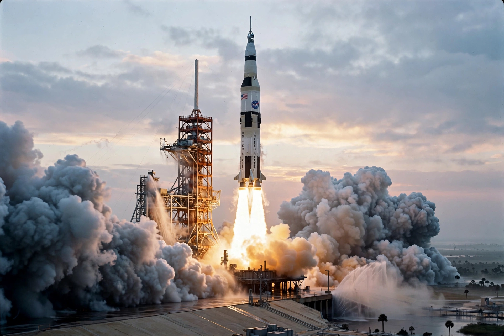

From Wikipedia, the free encyclopedia
| Apollo program | |
|---|---|
 | |
| Country | United States |
| Organisation | NASA |
| Duration | 1961 – 1972 |
| First crewed flight | Apollo 7 (1968) |
| First Moon landing | Apollo 11 (20 July 1969) |
| Last flight | Apollo 17 (1972) |
The Apollo program, also known as Project Apollo, was the United States human spaceflight program carried out by the National Aeronautics and Space Administration (NASA), which succeeded in preparing and landing the first humans on the Moon from 1968 to 1972. It was first conceived in 1960 during the Eisenhower administration as a three-person spacecraft to follow Project Mercury, and was dedicated in 1961 by President John F. Kennedy to the goal of "landing a man on the Moon and returning him safely to the Earth" in that decade.
Apollo used the Saturn family of launch vehicles, principally the Saturn V, still the most powerful rocket ever flown operationally. The spacecraft consisted of a Command/Service Module and a Lunar Module designed for landing two astronauts on the surface. After the Apollo 1 fire of 1967 killed three astronauts during a ground test, the program was redesigned and resumed with Apollo 7 in Earth orbit and Apollo 8's first crewed flight to the Moon in December 1968.
Six missions landed on the Moon: Apollo 11 (1969), 12 (1969), 14 (1971), 15 (1971), 16 (1972), and 17 (1972). Apollo 13 aborted its landing after an oxygen tank explosion but returned safely. Twelve astronauts walked on the lunar surface, conducted experiments, deployed instruments, and returned 382 kilograms of lunar rock and soil. Apollo 17, crewed by Eugene Cernan and Harrison Schmitt, was the final mission; no human has travelled beyond low Earth orbit since.
Apollo employed some 400,000 people at its peak and cost about $25.4 billion (roughly $180 billion in modern terms). It spurred advances in computing, materials, and telecommunications, and remains a benchmark for large-scale technological achievement.
Categories: Apollo program | NASA programs | Human spaceflight